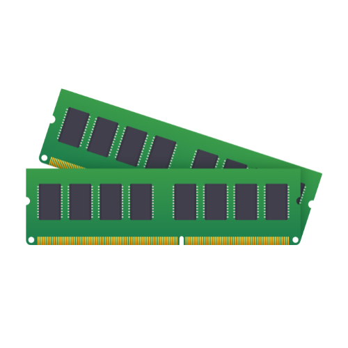
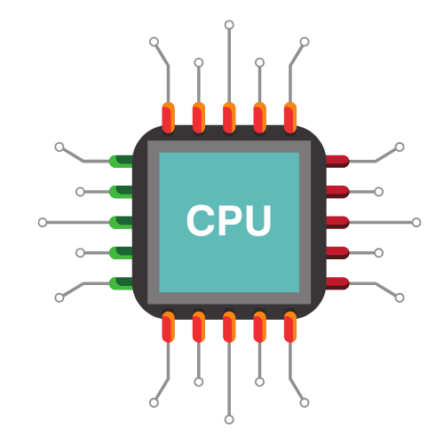
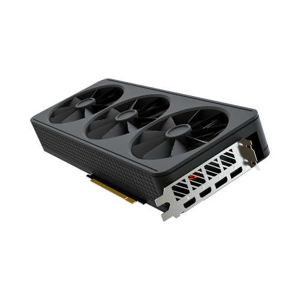
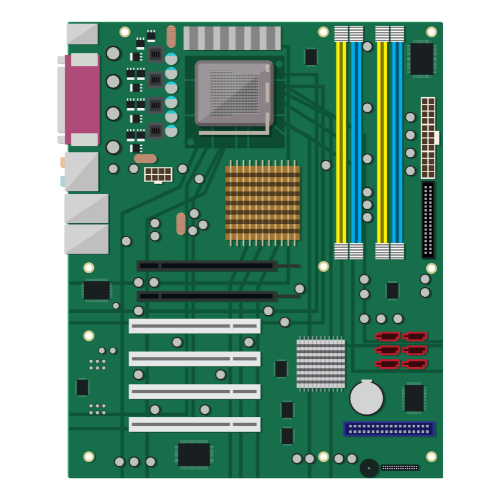
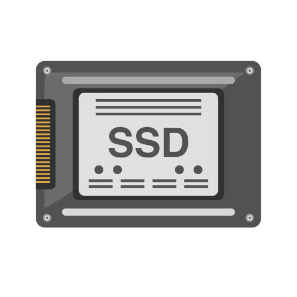
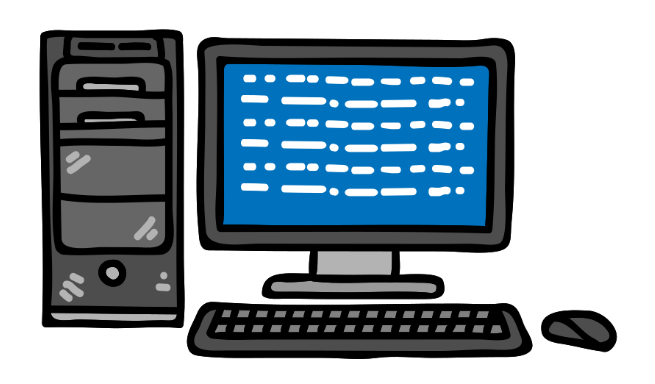

1. Apa fungsi utama dari monitor dalam sebuah komputer?

2. Gambar diatas adalah?

3. Apa fungsi utama dari CPU dalam sebuah komputer?

4. Apa itu GPU?

5. Apa fungsi utama dari motherboard dalam sebuah komputer?

6. Apa itu SSD?

7. Cooling fan biasanya digunakan untuk mendinginkan komponen mana dalam sistem komputer?

8. Apa komponen utama yang bertanggung jawab untuk menjalankan instruksi dalam komputer?

9. Apa fungsi utama dari keyboard dalam sebuah komputer?
10. Apa fungsi utama dari mouse dalam sebuah komputer? ?